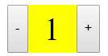
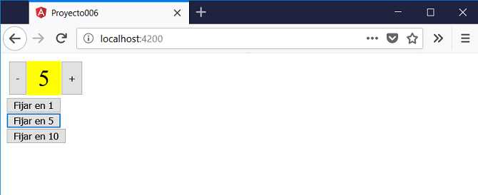

Otra forma de comunicarnos de la componente padre a la componente hija es la posibilidad de llamar a métodos de la componente hija definiendo una variable en el template HTML donde declaramos la componente hija.
Para llamar a los métodos la componente debe definir una variable en el template del HTML:
<app-dado #dado1></app-dado> <button (click)="dado1.tirar()">Tirar</button>
Para definir una variable local le antecedemos el caracter # al nombre. Luego podemos llamar a métodos indicando el nombre de la variable y el método a llamar.
Crear una componente llamada 'selectornumerico' que le pasemos el mínimo y el máximo valor que puede mostrar. Dentro de la componente definir dos botones que puedan incrementar o decrementar en 1 el valor actual.
En el template HTML de la componente padre definir un selectornumerico y definir una variable local para poder llamar luego a un método del selectornumerico para fijar cualquier valor.
La componente selectornumerico debe ser algo similar a esta interfaz:
Desde la línea de comandos de Node.js procedemos a crear el proyecto006:
f:\angularya> ng new proyecto006
Primero descendemos a la carpeta proyecto006 y nuevamente desde la línea de comandos procedemos a crear la componente 'selectornumerico' escribiendo:
f:\angularya\proyecto006> ng generate component selectornumerico
Recordemos que al ejecutar este comando se crean 4 archivos y se modifica uno.
Además dentro de la carpeta 'app' se crea una carpeta llamada 'selectornumerico' y dentro de ella se localizan los cuatro archivos creados.
El archivo que se modifica es 'app.module.ts' donde podemos comprobar que se importa la componente que acabamos de crear:
import { BrowserModule } from '@angular/platform-browser';
import { NgModule } from '@angular/core';
import { AppComponent } from './app.component';
import { SelectornumericoComponent } from './selectornumerico/selectornumerico.component';
@NgModule({
declarations: [
AppComponent,
SelectornumericoComponent
],
imports: [
BrowserModule
],
providers: [],
bootstrap: [AppComponent]
})
export class AppModule { }
En nuestro tercer paso vamos a implementar la vista de la componente 'selectornumerico' y su modelo. Abrimos el archivo 'selectornumerico.component.ts' y codificamos:
import { Component, OnInit, Input } from '@angular/core';
@Component({
selector: 'app-selectornumerico',
templateUrl: './selectornumerico.component.html',
styleUrls: ['./selectornumerico.component.css']
})
export class SelectornumericoComponent implements OnInit {
@Input() minimo: number=1;
@Input() maximo: number=1;
actual: number=1;
constructor() { }
ngOnInit() {
this.actual = this.minimo;
}
incrementar() {
if (this.actual<this.maximo)
this.actual++;
}
decrementar() {
if (this.actual>this.minimo)
this.actual--;
}
fijar(v:number) {
if (v>=this.minimo && v<=this.maximo)
this.actual=v;
}
}
En la clase SelectornumericoComponent podemos identificar el método que llamaremos desde el HTML template de la componente AppComponent:
fijar(v:number) {
if (v>=this.minimo && v<=this.maximo)
this.actual=v;
}
Codificamos ahora el archivo 'selectornumerico.component.html':
<div class="selector">
<button (click)="decrementar()">-</button>
<div class="valor">{{actual}}</div>
<button (click)="incrementar()">+</button>
</div>
Para definir la hoja de estilo del 'selectornumerico' abrimos el archivo 'selectornumerico.component.css' y codificamos:
.selector {
display:inline-flex;
margin:0.2rem;
}
.valor {
display:inline-flex;
justify-content: center;
align-items: center;
width: 3rem;
height: 3rem;
background:#ff0;
font-size:2rem;
}
button {
height: 3rem;
}
Abrimos ahora el archivo 'app.component.html' y remplazamos su contenido con la definición de un selectornumercio que define una variable local y tres botones que llaman a partir de esa variable al método definido dentro del selectornumerico:
<div> <app-selectornumerico [minimo]="1" [maximo]="10" #selector1></app-selectornumerico> <br> <button (click)="selector1.fijar(1)">Fijar en 1</button><br> <button (click)="selector1.fijar(5)">Fijar en 5</button><br> <button (click)="selector1.fijar(10)">Fijar en 10</button> </div>
La clase AppComponent la dejamos sin cambios.
Si ejecutamos ahora el proyecto:
ng server -o
Es decir que mediante dos botones definidos en la componente AppComponent podemos llamar al método fijar de la clase SelectornumericoComponent gracias a que definimos la variable #selector1:
<app-selectornumerico [minimo]="1" [maximo]="10" #selector1></app-selectornumerico> <br> <button (click)="selector1.fijar(1)">Fijar en 1</button><br> <button (click)="selector1.fijar(5)">Fijar en 5</button><br> <button (click)="selector1.fijar(10)">Fijar en 10</button>
Lo que debe quedar claro que debemos definir una variable en la etiqueta que define la componente y a partir de esta podemos llamar a métodos o inclusive acceder a propiedades de la componente.
Podemos probar esta aplicación en la web aquí.